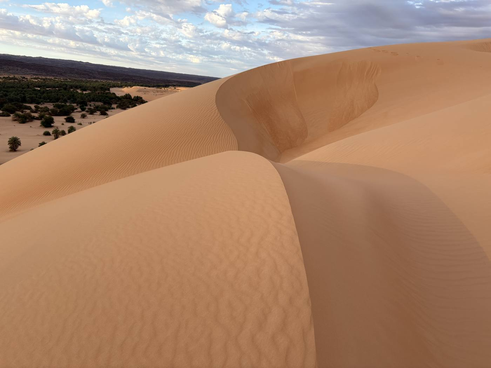
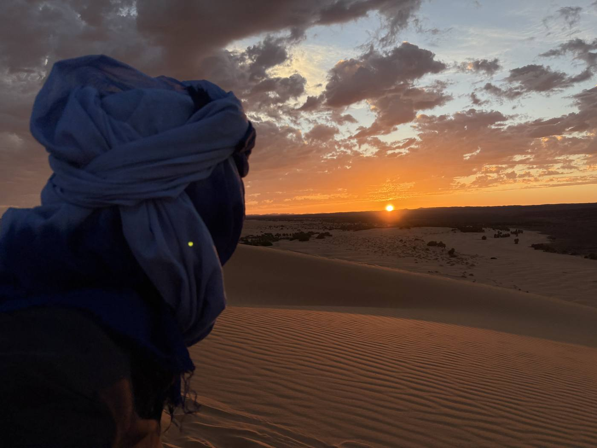
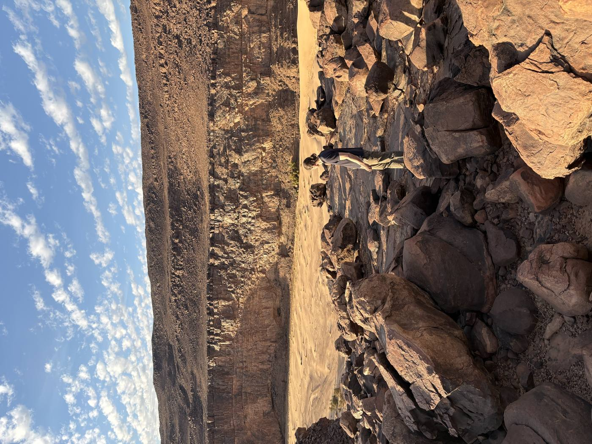
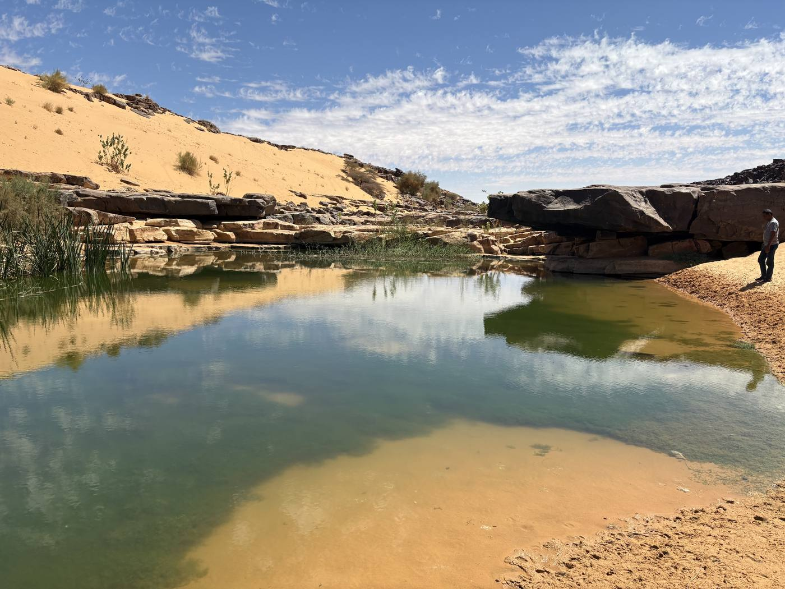
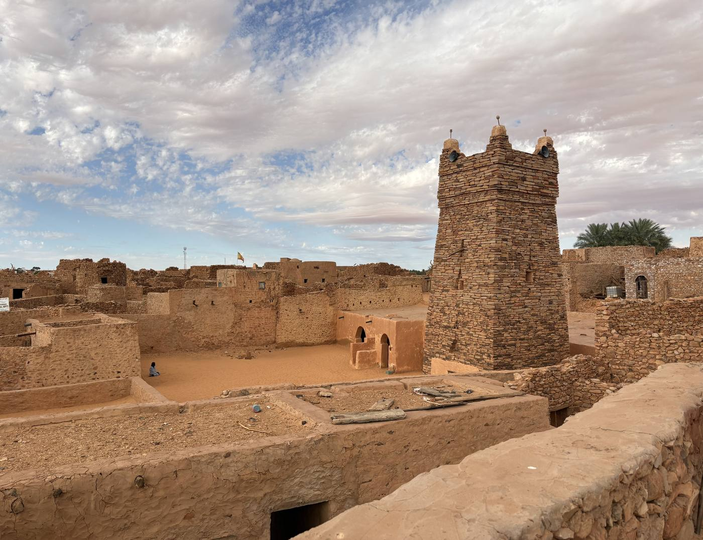
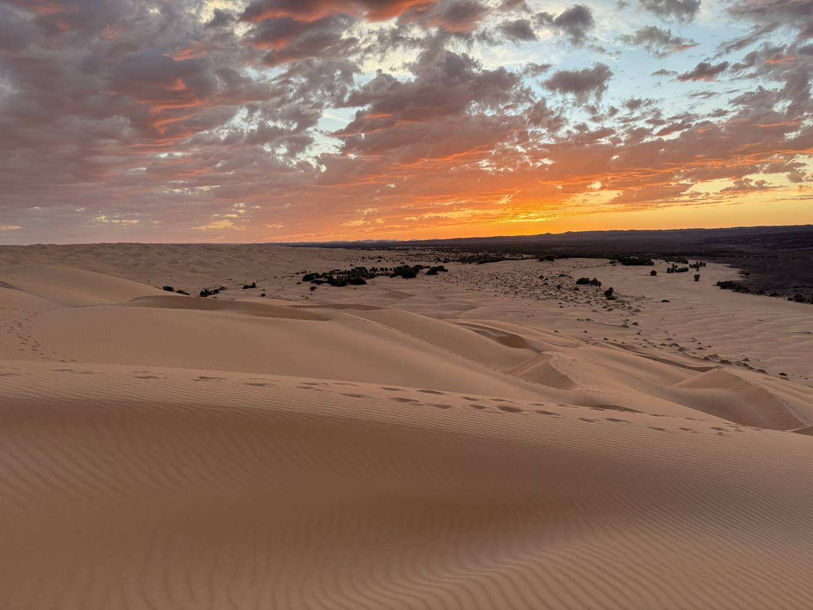
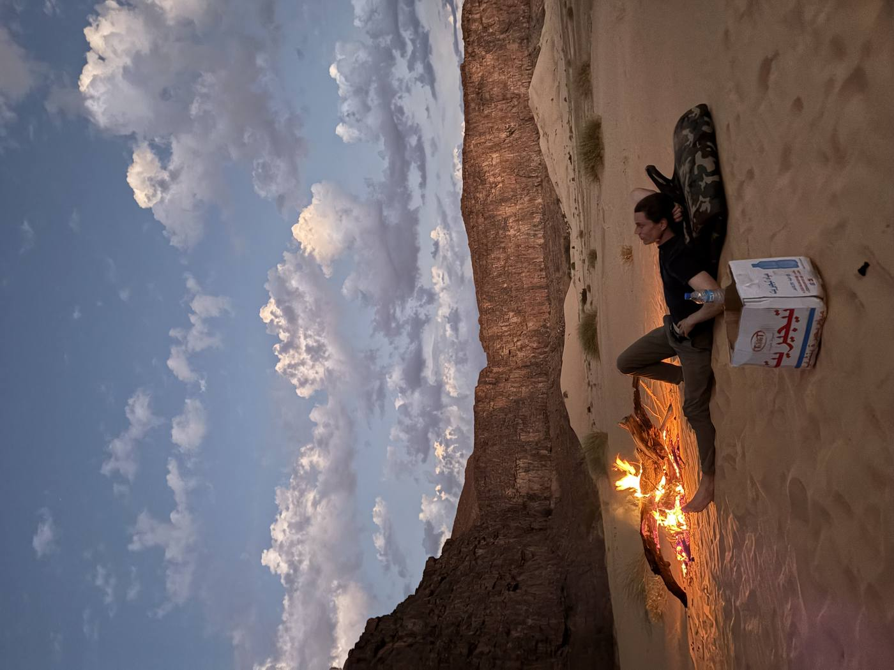
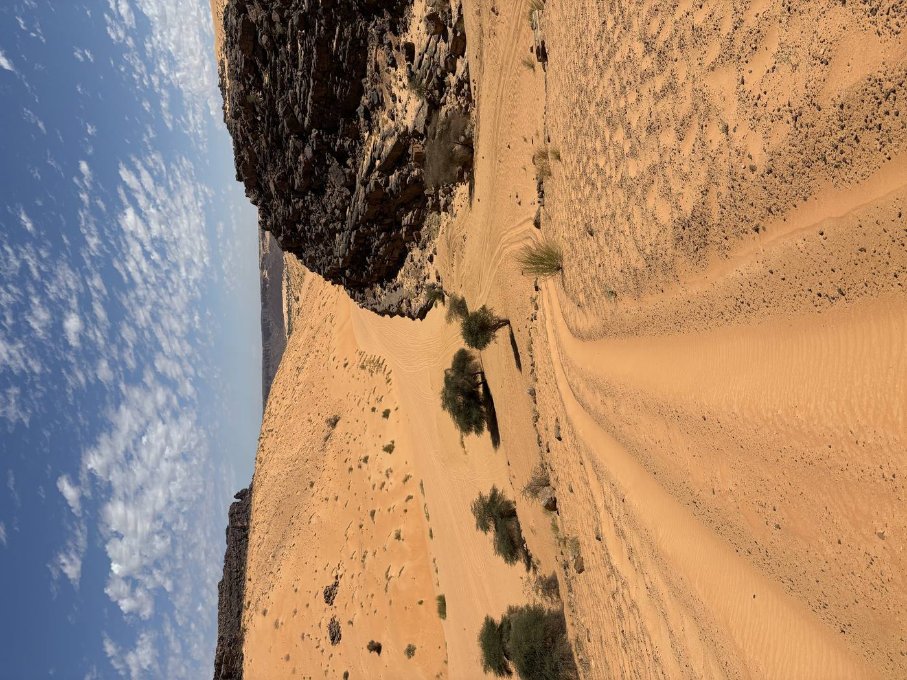
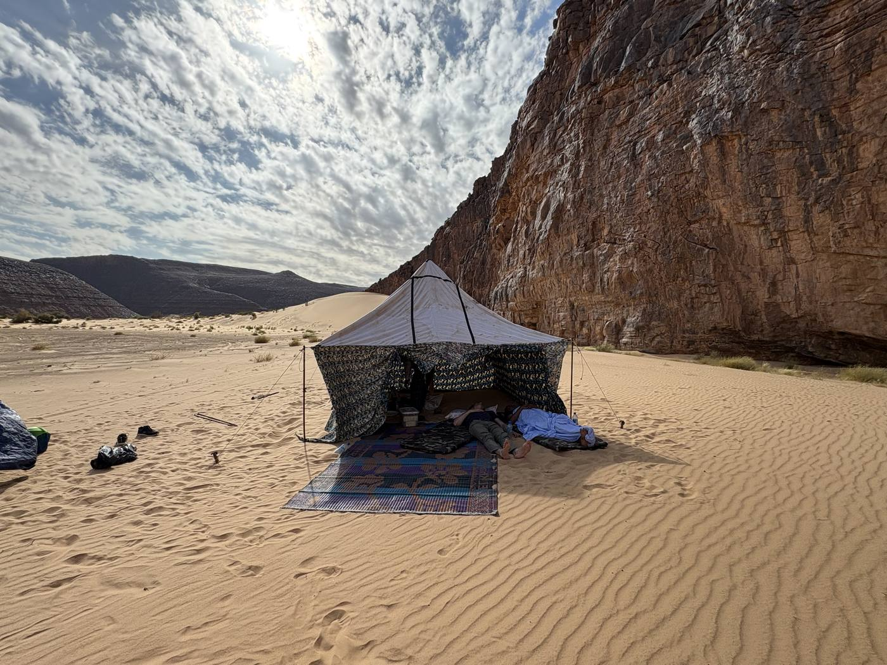
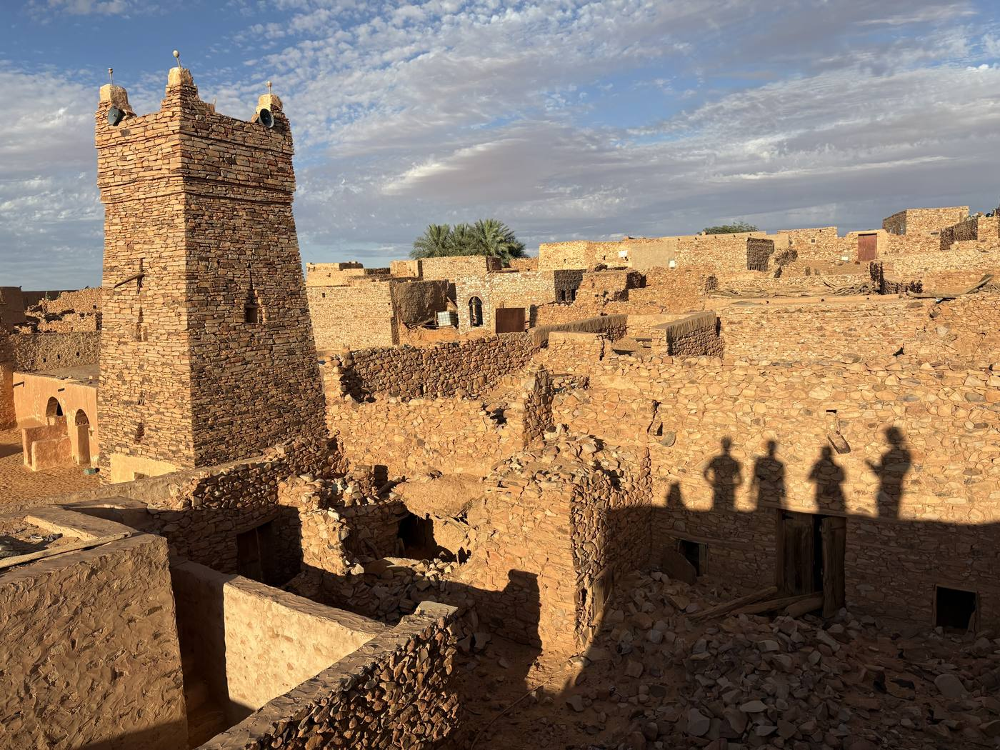

Mauritanie — Le dernier Sahara intact
Trois circuits d'exception à travers l'une des dernières étendues sauvages de la planète. Des voyages conçus pour ceux qui veulent vraiment arriver.
La porte de l'avion s'ouvre et la chaleur arrive en premier — absolue, ancienne, sans impatience. La lumière se déverse sur un paysage qui n'a aucun intérêt à vous impressionner. Il est, simplement.
Là-bas, au-delà de la brume, l'essentiel devient d'une clarté brutale : l'eau, l'ombre, la direction, la confiance. Tout le reste se dissout avec une rapidité remarquable.
Vous monterez sur un chameau au rythme qu'il aura décidé, et vous comprendrez — lentement, sans qu'on vous le dise — que c'est le bon rythme. Vous dormirez sous un ciel si dense en étoiles qu'il semblera architectural.
Les dunes vous attendent. Le feu sera allumé à votre arrivée.





Six raisons essentielles
La Mauritanie n'accueille que quelques milliers de voyageurs par an. Pas de tourisme de masse, pas d'enclaves artificielles — seulement le désert, ses habitants et vous.
Quatre des plus anciennes cités caravanières du monde — Chinguetti, Ouadane, Tichitt, Oualata — gardent des bibliothèques médiévales et une architecture introuvable ailleurs.
L'Adrar offre des dunes, des plateaux gréseux, des oasis cachées et des canyons à une échelle qui impose le silence à l'âme.
Dans les gueltas du plateau du Tagant survivent les derniers crocodiles du Nil du Sahara — vestiges vivants d'une époque où le plus grand désert du monde était vert.
L'un des plus grands trains du monde — 2,5 km — traverse 700 km de désert ouvert des mines jusqu'à l'Atlantique. L'un des derniers grands voyages ferroviaires de la planète.
Les nomades de l'Adrar pratiquent l'hospitalité comme une nécessité morale. Partager le thé, partager le silence — dans le désert, il n'y a pas de superficiel.
Trois chemins vers le silence



« Vous ne vous résoudrez pas en une semaine. Mais quelque chose se déplacera. C'est ce qui se passe toujours ici. »


Nos voyages
Chaque circuit est conçu avec soin. Chacun sera inoubliable. Tous partent et arrivent à Nouakchott, sauf indication contraire.
7 jours · Adrar
Une traversée du cœur doré du Sahara — de la capitale atlantique à travers les ergs infinis, les cités saintes et les oasis cachées jusqu'au bord du monde.
Départ à l'aube en convoi 4×4 vers le nord. Arrivée en début d'après-midi au pied de la Tenouagoujert — la plus haute dune de Mauritanie. Au coucher du soleil, le sable passe de l'or au rouge sang. Nuit sous la voûte laiteuse de la Voie lactée.
Randonnée à dos de chameau le long de la crête dunaire à l'aube. Bref arrêt à Atar pour le ravitaillement. Cap sur l'oasis de Terjit — un canyon extraordinaire de sources fraîches, de palmiers et d'hirondelles nichées dans des falaises de terracotta. Nuit dans les gorges.
Route vers l'est à travers les regs et les champs de sable. Visite de la mosquée du XIIIe siècle et des bibliothèques familiales gardant des manuscrits de 800 ans sur l'astronomie, les mathématiques et la théologie. Dîner chez une famille locale.
La plus isolée des quatre cités caravanières, perchée sur une falaise dominant une mer de sable. Exploration du quartier du XIe siècle et de la mosquée restaurée du XVe. La nuit au gîte du village est inoubliable.
Randonnée le long de la falaise, visite des citernes antiques, observation des caravanes de chameaux dans la plaine. L'après-midi, début du retour vers Atar avec nuit en bivouac dans le désert ouvert.
Retour à Atar. C'est ici que les chemins se séparent : continuer vers le sud en direction de Nouakchott (Option A) — ou partir vers le nord-ouest pour Choum et le légendaire train de minerai de fer jusqu'à Nouadhibou (Option B).
Option A : Route vers le sud. Dîner de célébration au Port de Pêche de Nouakchott à la tombée du soir.
Option B : Montez à bord du train SNIM à Choum — jusqu'à 2,5 km de long — et traversez 700 km de désert ouvert jusqu'au port atlantique de Nouadhibou. En wagon passagers ou gratuitement dans un wagon de minerai à ciel ouvert sous les étoiles.
7 jours · Détox numérique
Sept jours complètement déconnectés. Les téléphones sont scellés au départ et ne sont rendus qu'à Atar le dernier jour — sans exception.
Chaque matin commence par le yoga au lever du soleil. Les journées se déroulent en randonnées à dos de chameau, marches guidées dans le désert et visites de cités caravanières antiques. Les soirs appartiennent au feu. Les nuits, aux étoiles.
Téléphones scellés. Départ à l'aube. Arrivée au camp des dunes. Première pratique du silence — 30 minutes de méditation assise dans les dunes. Marche au coucher du soleil jusqu'au sommet. Feu de bienvenue et observation des étoiles.
06h15 — Yoga du matin sur la crête de la dune. Petit-déjeuner : dattes, galettes, thé à la menthe. Randonnée à dos de chameau, 3 heures. Heure de repos en pleine chaleur. Marche désert : navigation sans GPS. Soirée autour du feu avec histoires nomades.
Yin yoga à l'orée de l'oasis. Randonnée dans les gorges de Terjit. Baignade dans les sources naturelles. Après-midi libre. Randonnée à dos de chameau au coucher du soleil. Soirée de silence au coin du feu — une heure sans paroles autour des braises.
Yoga sur les toits. Visite d'une bibliothèque privée avec des manuscrits du XIVe siècle. Promenade dans le quartier fantôme. Marche solo de deux heures dans un périmètre balisé, sans conversation. Cercle de partage autour du feu.
Yoga au bord de la falaise, pranayama et méditation assise. Exploration des ruines du XIe siècle. Randonnée à dos de chameau, 3 heures, sur le plateau. Soirée musicale avec un musicien local jouant de la tidinit.
Yoga avant l'aube et exercices de respiration. Grande randonnée de 15 km à travers l'erg et le hamada. Retour au camp au coucher du soleil. Cérémonie de clôture : chacun laisse quelque chose dans le désert — habitudes, pensées, objets — offerts au feu.
Dernier yoga du matin : intention pour le retour. Démontage du camp. Téléphones rendus scellés à Atar. Ouvrez-les quand vous êtes prêt — rien ne presse.
8 jours · Adrar & Tagant
⚠ Ce circuit représente un niveau de difficulté et d'isolement supérieur. Deux véhicules 4×4 minimum et un téléphone satellite sont obligatoires. La récompense : une route si rarement empruntée qu'elle existe à peine sur les cartes.
Une épopée à travers deux des régions les plus reculées de la Mauritanie. Des cités caravanières UNESCO de l'Adrar, la route descend vers le sud dans le plateau du Tagant — un monde plus sauvage, plus rare. Des crocodiles dans le désert. Des villes fantômes. Des pistes que le vent efface.
Départ au lever du soleil. Bref arrêt à Atar. Arrivée à Chinguetti en fin d'après-midi. Visite de la mosquée et d'une bibliothèque de manuscrits antiques. Dîner chez une famille locale.
Route vers l'est jusqu'à la cité caravanière la plus isolée. Ouadane se dresse sur une falaise dominant une mer de sable. Exploration du quartier en ruines du XIe siècle. Nuit au gîte du village.
La journée de conduite la plus exigeante : longue descente du plateau de l'Adrar vers le Tagant. Le paysage se transforme de l'erg doré au hamada sombre et aux escarpements rouge rouille. Nuit à Tidjikja, chef-lieu de la région du Tagant.
Route vers Nbeika, puis 25 km de piste jusqu'à l'entrée des gorges. Trois kilomètres à pied dans le canyon. Au bout : les derniers crocodiles du Nil du Sahara — des reliques vivantes d'un passé vert. Approchez en silence. Prenez des jumelles. Bivouac à l'entrée du canyon sous un ciel improbable.
Longue et enthousiasmante piste vers l'est à travers la dépression d'Aoukar. Tichitt est une cité caravanière UNESCO d'une beauté bouleversante — des maisons de pierre à moitié ensevelies sous le sable, moins de 1 000 habitants, un silence absolu. Nuit au village.
Dernière promenade dans les ruines. Retour vers l'ouest via Tidjikja. Dernier feu de camp dans le désert ouvert.
Route de la Route de l'Espoir jusqu'à la côte atlantique. Arrivée à Nouakchott. Dîner de clôture au Port de Pêche avec du poisson frais tandis que les pirogues rentrent de la mer.
Notre engagement
« La Mauritanie n'est pas une destination que nous vendons. C'est un lieu dont nous sommes responsables. »
Les écosystèmes désertiques, les cités antiques et les cultures nomades que vous rencontrerez sont d'une fragilité extraordinaire. Ils ont survécu à des millénaires d'adversité naturelle. Ce qu'ils supportent moins bien, c'est un tourisme irresponsable. Nous le prenons au sérieux — et nous vous demandons de le faire avec nous.
Nous travaillons exclusivement avec des guides, chauffeurs, cuisiniers et partenaires mauritaniens. L'argent que vous dépensez va aussi profondément que possible dans l'économie locale.
Dix personnes maximum — non pas comme argument marketing, mais comme nécessité écologique et culturelle. Les grands groupes endommagent les écosystèmes dunaires et submergent les petites communautés.
Nous emportons tous les déchets du désert et les ramenons à Nouakchott pour une élimination correcte. Rien n'est enterré, brûlé ou abandonné.
Nous payons des salaires équitables au-dessus du marché local, fournissons un équipement adapté à tous nos collaborateurs et entretenons des relations à long terme avec nos partenaires.
Nous compensons l'empreinte carbone de chaque vol dans nos programmes via des projets de reforestation certifiés en Afrique de l'Ouest.
Un pourcentage de chaque réservation finance des projets dans la région de l'Adrar, notamment la préservation des bibliothèques de manuscrits de Chinguetti et l'accès à l'eau potable dans les villages isolés.
Chaque emballage, chaque bouteille, chaque mégot — tout repart avec le véhicule. Le désert semble vide. Il ne l'est pas.
Partagez d'abord un thé. La photo, si elle vient, sera meilleure. Pointer un appareil sur quelqu'un sans permission est un acte de prélèvement, pas de connexion.
La Mauritanie est un pays musulman avec des codes de modestie profonds. Couvrir les épaules et les genoux ne coûte rien et dit beaucoup.
Aucun tesson, aucune pierre sculptée, aucun fragment de mur antique. Ces sites sont non protégés et irremplaçables.
Le désert offre quelque chose de plus en plus rare : un vrai silence. Ne le remplissez pas inutilement. Laissez aux autres voyageurs — et à vous-même — d'y accéder.
Vous avez pris l'avion et brûlé du carburant pour rejoindre un pays qui ne contribue presque rien aux pressions climatiques qui menacent maintenant son propre territoire. Portez cette contradiction avec humilité plutôt que défensive.
Nous croyons que le tourisme, pratiqué avec un vrai soin, peut être une force pour la conservation, la dignité culturelle et la résilience économique. Nous vous demandons de nous aider à le faire bien.
Langue & culture
Le hassaniya est le dialecte arabe des Maures de Mauritanie. Quelques mots — et surtout le rituel du thé — ouvrent des portes et des cœurs. L'effort compte plus que la prononciation.
Le thé mauritanien — l'atay — est servi en trois verres : le premier est fort comme la mort, le second doux comme la vie, le troisième léger comme l'amour. Refuser est impoli. La patience est la vertu — un rituel complet peut durer 45 minutes et constitue le cœur de toute rencontre sociale dans le désert. Ne vous pressez jamais lors de l'atay. C'est précisément le moment où rien d'autre n'est censé se passer.
Découvrir la Mauritanie
Dix raisons pour lesquelles la Mauritanie est l'une des destinations les plus extraordinaires au monde — bien au-delà des dunes.
La Tenouagoujert est considérée comme la plus haute dune d'Afrique. Au coucher du soleil, le sable se teinte de rouge sang, et la Voie lactée apparaît si proche qu'on croit pouvoir la toucher. Le premier bivouac ici est inoubliable.
Jadis point de rassemblement des pèlerins d'Afrique de l'Ouest en route vers La Mecque. Aujourd'hui, des bibliothèques familiales conservent des manuscrits de 800 ans sur l'astronomie, les mathématiques et la théologie. Le vent déplace les dunes dans les ruelles abandonnées.
Un paradis de canyon d'une beauté improbable — palmiers, sources fraîches, hirondelles dans les falaises de terracotta. Se baigner au cœur du Sahara. Le lieu le plus surprenant du voyage.
La plus isolée des cités caravanières, dressée sur un éperon rocheux au-dessus d'une mer de sable. Le quartier en ruines du XIe siècle est lentement reconquis par les dunes. Le silence y est complet.
Jusqu'à 2,5 km de long — l'un des plus grands trains du monde. Des mines de Zouérate au port atlantique de Nouadhibou : 700 km de désert ouvert. En wagon passagers ou gratuitement dans un wagon de minerai à ciel ouvert sous les étoiles.
Dans une gorge de grès du plateau du Tagant survivent les derniers crocodiles du Nil du Sahara. Un lien vivant avec une époque où le plus grand désert de la planète abritait des rivières et des lacs verdoyants.
Sans pollution lumineuse, sans nuages — la Voie lactée n'est pas une abstraction ici, c'est un fait architectural. Allongé sur le sable frais, avec les braises du feu et le silence tout autour.
Une cité du patrimoine mondial de l'UNESCO qui retourne lentement au sable. Moins de 1 000 habitants. Des maisons de pierre d'une qualité artisanale extraordinaire. Des routes caravanières qui portaient jadis l'or et le sel.
Trois verres d'atay. Des histoires autour du feu. Des nuits dans le désert avec des guides qui connaissent chaque crête de dune. L'hospitalité comme absolu moral — dans le désert, ce n'est pas une formule.
Pas seulement les destinations, mais le chemin qui y mène : canyons, pistes de sable, plateaux basaltiques et ces moments où la piste s'arrête devant vous — et le GPS se tait. C'est la Mauritanie.
Préparation
Le désert punit autant les bagages trop lourds que trop légers. Cette liste a été établie par des gens qui connaissent la Mauritanie — pas depuis internet, mais depuis le sable.
Nous écrire
Chaque voyage commence par une conversation. Écrivez-nous — nous répondons sous 24 heures et discutons de tout sans pression.
Agence de voyages spécialisée en Mauritanie, basée en France. Tous nos circuits sont conduits par des guides mauritaniens locaux, avec un accompagnement francophone dédié.
« Chaque voyage est une conversation entre vous et le désert. Notre rôle est de veiller à ce que vous soyez bien introduit. »